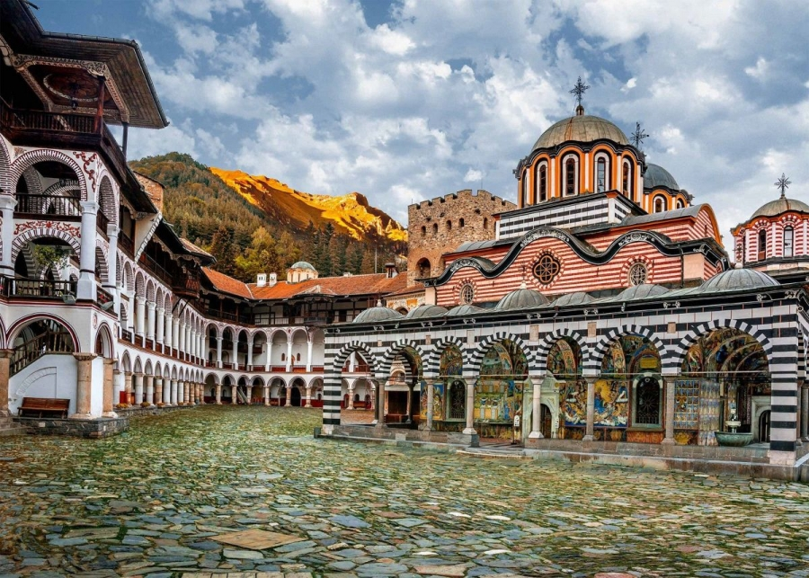

Bulgaria
Рилски манастир
Манастирът „Свети Йоан Рилски“ е построен на мястото на стара постница през 927 – 941 г. от св. Йоан Рилски Чудотворец (според някои автори – от неговите ученици) в Рила планина. В двора на днешния манастир през 1335 г. е издигната отбранителна кула и малка еднокорабна черква от местния феодален владетел протосеваст Хрельо. Кулата е най-старата запазена сграда в манастирския комплекс. На върха на кулата се намира параклисът „Свето Преображение“ с ценни фрески от 30-те години на 14 век.
Цар Иван Шишман (1371 – 1393 г.) издава на 21 септември 1378 г. Рилската грамота, подписана и подпечатана със златен печат, с която дава на манастира като феодални владения 20 села, заедно със землищата им. Още през 1402 г. османското правителство нарежда на кюстендилския кадия да потвърди съществуващите от по-рано права на обителта. Данъчен регистър от 1520 – 1521 г. изрежда поименно 21 живеещи там монаси. През 1469 г. с помощта на Мара Бранкович мощите на св. Йоан Рилски са пренесени обратно от Търново в Рилския манастир.
